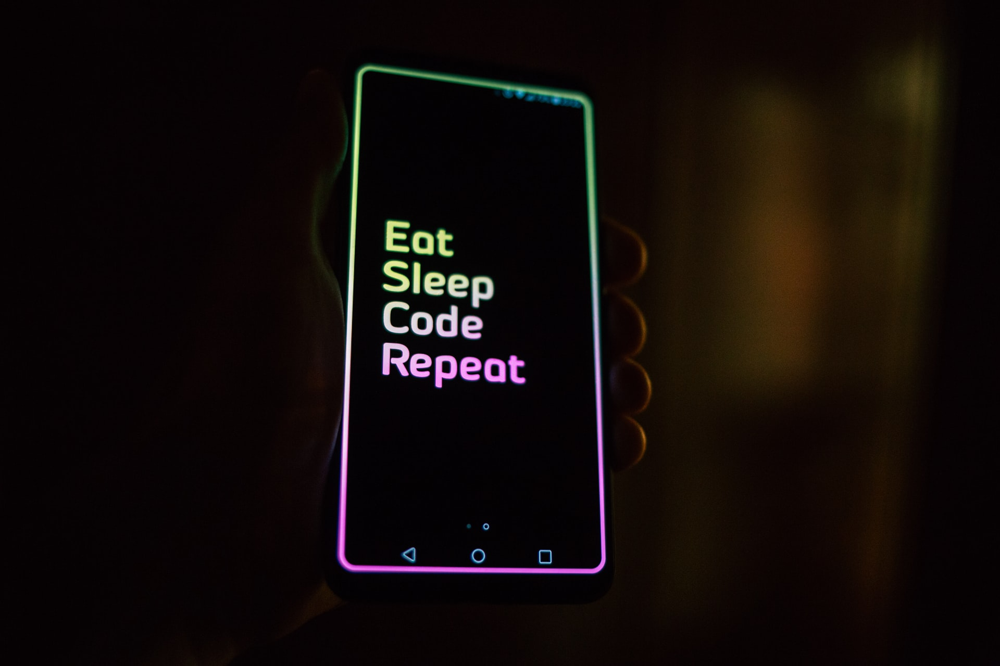

How to turn curiosity into career-ready skills
Practical learning habits that help you make the most of every opportunity.
Read article
Ideas for your next step
Stories, advice and insights to help you get more from your education and future career.
Latest from ISMT
Practical learning habits that help you make the most of every opportunity.
Read article
Why connection, feedback and collaboration matter during your studies.
Read article
Start building the habits and confidence that employers notice.
Read article